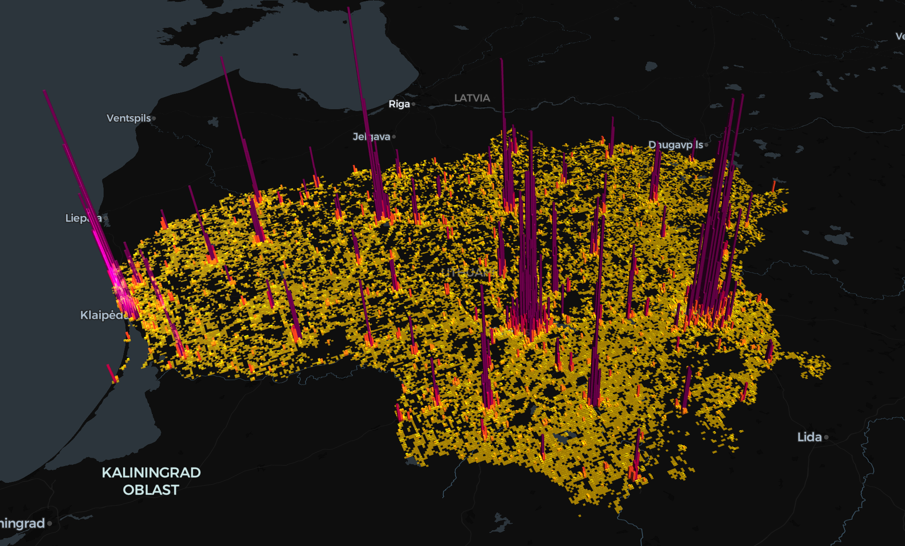
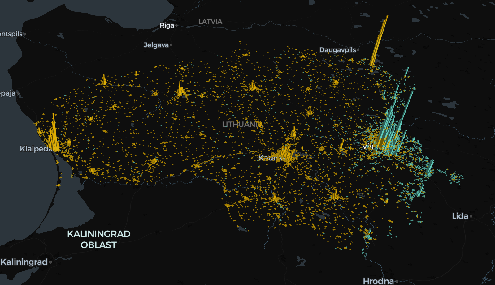
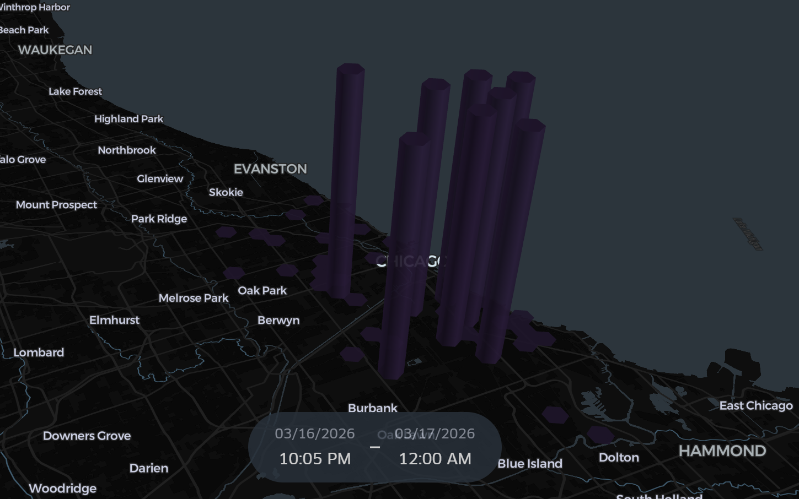
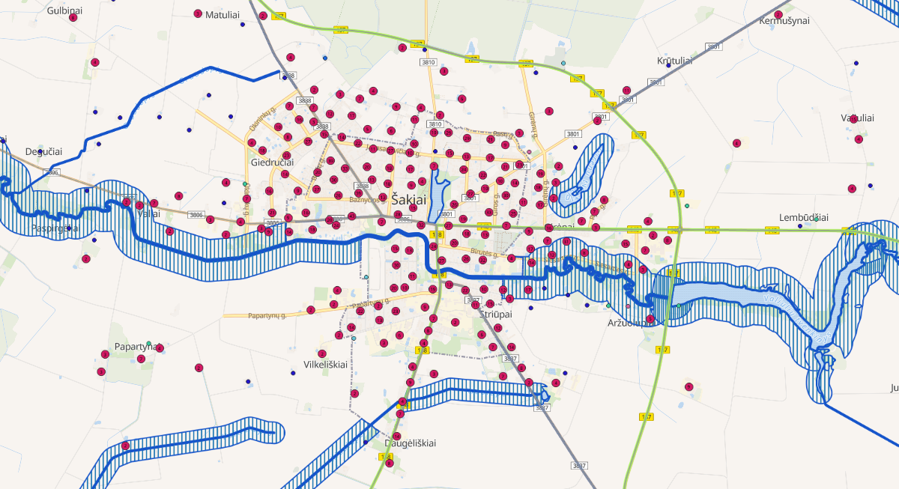
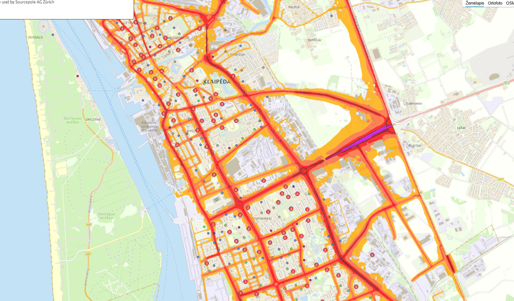
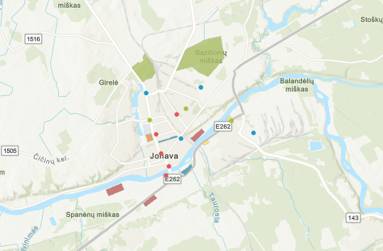

Lietuvos populiacija pagal lytį
Žemėlapyje pateikiama Lietuvos populiacijos analizė pagal vyrų ir moterų pasiskirstymą.
Atidaryti žemėlapį
Interaktyvi svetainė, kurioje pateikiami demografiniai, teminiai, nusikalstamumo, infrastruktūros ir investicinių objektų žemėlapiai.
Ši svetainė skirta pristatyti šešis interaktyvius žemėlapius: Lietuvos populiacijos pagal lytį, tautybių pasiskirstymo, Čikagos nusikalstamumo, Šakių pastatų ir infrastruktūros, Klaipėdos švietimo įstaigų bei Jonavos investicinių objektų žemėlapius.
Žemėlapyje pateikiama Lietuvos populiacijos analizė pagal vyrų ir moterų pasiskirstymą.
Atidaryti žemėlapį
Žemėlapyje vaizduojamas rusų ir baltarusių tautybės gyventojų pasiskirstymas Lietuvoje.
Atidaryti žemėlapį
Žemėlapyje pateikiami Čikagos nusikalstamumo duomenys 2026-03-16 ir 2026-03-17 laikotarpiu.
Atidaryti žemėlapį
Žemėlapyje pateikiami Šakių rajono pastatai, pagrindiniai keliai ir vandens zonos.
Atidaryti žemėlapį
Žemėlapyje vaizduojamos Klaipėdos miesto švietimo įstaigos kartu su karščio zonų informacija.
Atidaryti žemėlapį
Žemėlapyje pateikiami Jonavos rajono investiciniai objektai ir jų erdvinė informacija.
Atidaryti žemėlapį
III kurso Kartografijos ir GIS studentas.
El. paštas: rokas.bimba@chgf.stud.vu.lt
Eiti į kontaktus